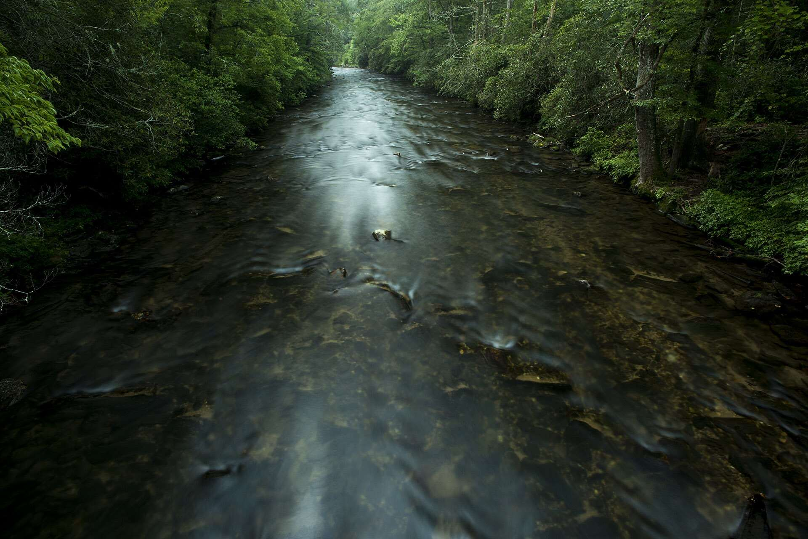
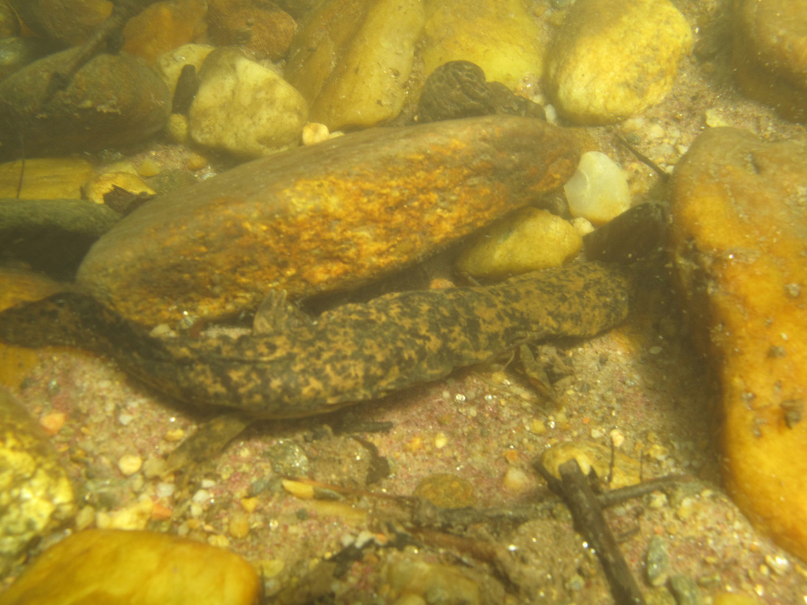
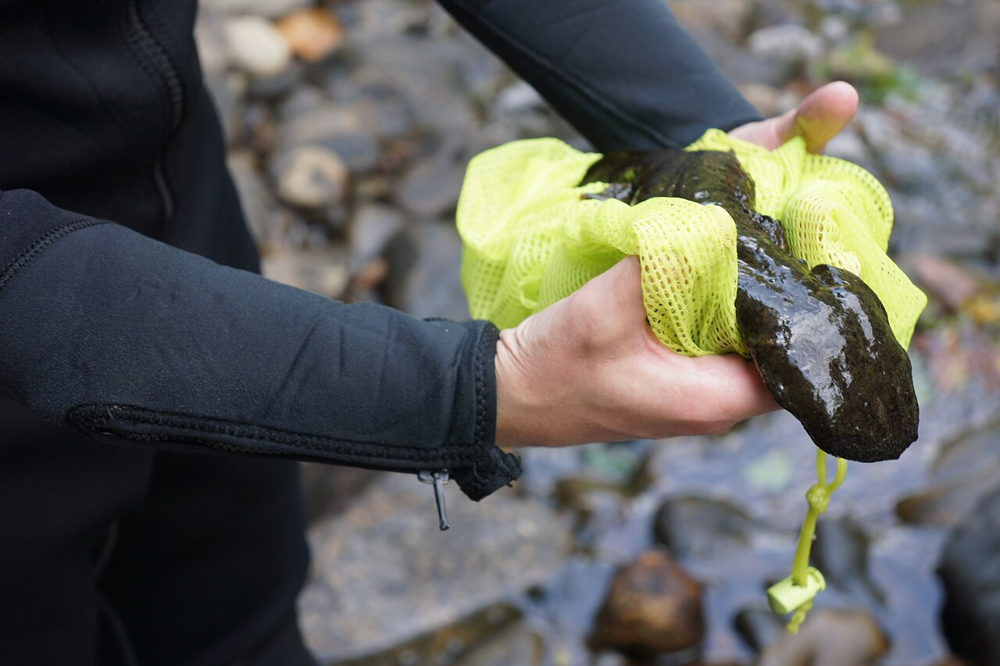

Davidson River, Pisgah National Forest, Transylvania County
Salamanders of Western North Carolina
The Southern Blue Ridge holds more salamander species than any comparable area on Earth. This is a working reference to them: current names, where each lives along the stream-to-ridge gradient, which mountain blocks hold which taxa, and where each stands legally as of October 2026.
Why here
AmphibiaWeb currently recognizes 846 salamander species worldwide, and 523 of them (62%) belong to Plethodontidae, the lungless salamanders. The 56 species treated on this page, 51 of them plethodontids, occur in roughly two dozen mountain counties. That is about one in fifteen of the world’s salamanders and one in ten of its plethodontids.
Lunglessness is the key. Plethodontids breathe through moist skin and the lining of the mouth, so they need cool, wet, thermally stable habitats, and the Southern Blue Ridge supplies them at every elevation. High, isolated ridges separated by warm valleys fragment those habitats. Climatic-niche evolution here has been fast (Kozak & Wiens 2010), and much of the Plethodon radiation is non-adaptive: similar species sorted onto different mountain blocks rather than into different niches.
The region has never been glaciated, and it has been a center of plethodontid diversification since long before the Pleistocene. Many lineages here are old, narrowly distributed, and only recently recognized as species.
Species treated on this page, by family
The names have changed. Between 2020 and 2023, Pyron, Beamer and colleagues revised nearly every Southern Appalachian Desmognathus complex. D. quadramaculatus is no longer a valid name: Holbrook’s type proved to be a dusky salamander, so the name falls into the synonymy of D. fuscus. The black-bellied, shovel-nosed, Ocoee, seal and dusky complexes now account for more than a dozen species in WNC alone. The SSAR 9th edition (2025) adopts all of these changes. Older field guides, the NC Herp Atlas and some state databases still use the earlier names, so each species account here lists what it was formerly called.
Not treated as WNC species here, pending vouchers or confirmation: D. aureatus (“small portions of nearby NC”; a related mtDNA lineage has been found in the Smokies), D. conanti s.s. (“likely” in extreme western NC), D. planiceps (confirmed only in the NC Piedmont), D. kanawha (upper Yadkin and Roanoke; New River headwaters inferred), P. glutinosus s.s. (older NC records belong to segregate species), Ambystoma jeffersonianum (known from adjacent Virginia only), and A. talpoideum.
From the channel to the ridgeline
Each bar is the approximate elevational range a species occupies in Western North Carolina. Grouped by microhabitat, the chart reads like a hillside: big aquatic species at the bottom, the streamside Desmognathus ladder in the middle, and the terrestrial Plethodon on the slopes and summits. Colored bars carry NC protected status. Select a species to open its account.
- Not state listed
- NC Special Concern
- NC Threatened
- NC Endangered
- Background: approximate forest zone
Elevations are generalized from regional accounts and vary with aspect, latitude and local relief; treat them as a guide to where to look, not as range limits.
The Desmognathus ladder
Walk a transect up from a Blue Ridge stream and the dusky salamanders change in a predictable order. First come the shovel-nosed species in the riffles, then the black-bellied species at the channel edge and seal salamanders on the banks. The duskies hold the seeps. The mountain duskies (ocoee, carolinensis, orestes, imitator and relatives) range out onto the forest floor, and the pygmy and seepage salamanders, which develop directly, live in the litter well away from water. Body size, age at maturity and fecundity fall along the same gradient (Hairston 1949; Bruce 1996, 2013).
The phylogeny complicates the tidy picture. The shovel-nosed form evolved at least twice, once in the Nantahala clade (aureatus with folkertsi) and once in the Pisgah clade (intermedius). The black-bellied form also spans two distant clades. Ecomorphs that look like a single adaptive radiation are partly repeated convergence, possibly helped by ancient introgression (Kozak et al. 2005; Pyron & Beamer 2023).
Hairston’s salamanders
In the Smokies, Plethodon jordani holds the high slopes and the large slimy salamander (P. glutinosus then, P. teyahalee now) the lower ones, with a narrow band of overlap. In the Balsams the overlap is wide (Hairston 1951). Removal experiments in both ranges found competition much stronger in the Smokies (Hairston 1980). Reciprocal transplants were asymmetric, and the evolved response was interference, through aggression, rather than partitioning of food or microhabitat (Hairston, Nishikawa & Stenhouse 1987). Under current taxonomy, Hairston’s Balsam “jordani” are probably P. metcalfi.
In the Nantahalas, P. shermani and P. teyahalee meet in an elevational hybrid zone (Hairston et al. 1992). Reanalysis of 16 years of Coweeta data found that the zone moved upslope and the share of pure shermani at high elevation fell as mean annual temperature rose (Walls 2009). Resurveys of Hairston’s 1940s transects found something less expected: montane species’ lower limits moved down as forests recovered (Moskwik 2014).
Mountain blocks and drainages
Narrow-range Southern Appalachian salamanders sort by isolated high-elevation blocks and by the Eastern Continental Divide. The matrix shows which species occur in each block; the diagram below shows which side of the divide each river runs to.
- Present
- Marginal, peripheral, or only at the edge of the block
Blocks are coarse, and boundaries between them are drawn for this chart. Distributions are summarized from Beane et al. (2010), species descriptions and recent revisions; check the primary literature for locality-level questions.
The eastern hellbender
Cryptobranchus alleganiensis alleganiensis (Sonnini de Manoncourt & Latreille, 1801) is North America’s largest salamander and the region’s indicator of a working river. In North Carolina it lives only in the Tennessee and New River drainages, and more than half of the occupied reaches fall within Hurricane Helene’s September 2024 flood extent. Phylogeographic work recovers several deep lineages. The New–Kanawha animals of northwestern North Carolina belong to one that has no name yet (Hime 2017; SSAR 2025).

- Size
- Adults typically 40–45 cm total length; can exceed 60 cm and 1.4 kg
- Maturity
- About 5–8 years, at roughly 30 cm
- Longevity
- At least 25–30 years in the wild
- Respiration
- Mostly cutaneous; the wrinkled lateral folds add surface area. Adults have lungs but use them little.
- Breeding (NC)
- Late August through September. External fertilization in a cavity under a large rock.
- Clutch
- 200–500 eggs in strands, about 6 mm each; hatch in 10–12 weeks
- Larvae
- Keep external gills for about 1.5–2 years; use unembedded cobble and gravel interstices
- Diet
- Mostly crayfish; also small fish, insects, frogs, and carrion
- Home range
- About 30–2,212 m²; individual movements up to 12.9 km recorded
Sources: NCWRC species profile; USFWS proposed rule, 89 FR 100934 (13 Dec 2024).
Habitat
Perennial, swift, cool, well-oxygenated, low-conductivity streams and rivers, usually below about 900 m in North Carolina. Adults need large, flat, partly embedded rocks (at least 30 cm across) with a single downstream-facing opening, and suitable patches no more than about a kilometre apart without barriers. In Pennsylvania, specific conductance was the strongest single predictor of persistence (Pitt et al. 2017).
The denmaster
The male excavates a nest cavity, admits one or more females, then guards the clutch and larvae for months. Cameras on the French Broad in 2018–19 showed resident males spending 82% of recorded time at the entrance and driving off other hellbenders (Unger et al. 2020). Guarding males also eat eggs, and whole-clutch filial cannibalism increases with upstream forest loss: in 182 nests across 10 Virginia sites, nest failure rose as riparian forest cover fell (Hopkins et al. 2023).
What is pushing them down
USFWS ranks sedimentation first, followed by water quality, impoundments and channelization, disease, collection and persecution, small isolated populations, and climate change. In Western North Carolina, occupancy at headwater sites tracks both land cover and local physicochemistry (Pugh et al. 2016). Moving rocks also kills them: in-stream rock moving and dam-building have killed adults and larvae (Unger et al. 2017), and in September 2025 Great Smoky Mountains National Park reported a hellbender crushed under a visitor-built rock stack.
Range-wide, the 2024 proposal counts 626 historical populations. Of those, 371 are extant and 255 (41%) are extirpated or functionally extirpated. Of the extant populations, 218 (59%) are declining and only 45 (12%) are stable and recruiting.
Federal listing history
- CBD petitions to list 404 southeastern aquatic species, the hellbender among them.
- Ozark hellbender (C. a. bishopi) listed Endangered; both subspecies added to CITES Appendix III.
- Range-wide listing of the eastern hellbender found not warranted; Missouri DPS proposed Endangered (84 FR 13223).
- Missouri DPS listed Endangered (86 FR 13465). It does not occur in NC.
- CBD v. USFWS (S.D.N.Y.) vacates and remands the 2019 finding for relying on conservation measures not yet implemented or shown effective.
- Eastern hellbender proposed Endangered range-wide; critical habitat ruled “not prudent” because maps would aid collectors (89 FR 100934).
- Statutory deadline for a final rule passes; USFWS moves the action to its long-term list.
- CBD sues in D. Ariz. (No. 4:26-cv-00093) to compel a final rule. As of October 2026 no ruling or settlement has been reported.
After Helene
Hurricane Helene hit in late September 2024, during peak nesting. Of the 49 hellbender-occupied stream segments in Western North Carolina, 28 overlap the mapped flood extent, 22 overlap failed infrastructure and 12 overlap landslides. At two Nolichucky sites, fine sediment rose from pre-storm averages of 26% and 21% to 35% and 41% (Southeast CASC final report, July 2026).
In the second quarter of 2026, NCWRC surveys on an upper French Broad tributary in Transylvania County found adults still below pre-storm numbers but larvae at two of three sites. Substrate there worsened after in-stream debris removal.
Who is working on it
NCWRC has run hellbender inventory and monitoring since 2007 and an eDNA program that found the species at nine previously unrecorded sites in its first season (Spear et al. 2015). The NC Zoo surveys monthly with NCWRC and has tested concrete nest boxes north of Asheville since 2017. The Amphibian and Reptile Conservancy has an Asheville-based Hellbender Recovery Coordinator, and the Watauga Riverkeeper and MountainTrue relocated animals ahead of the Shull’s Mill dam removal.
Report a hellbender or mudpuppy: NCWRC Western Region Amphibian Biologist, lori.williams@ncwildlife.gov, or the NC Wildlife Helpline at 866-318-2401. A photo and the stream name are enough. Leave the animal and its rock where they are.
Species accounts
Every species on this page, in taxonomic order. Filter by family, microhabitat, drainage or status, or search by scientific name, common name, or an older name.
No species match those filters.
Conservation status
North Carolina’s protected-animal list is 15A NCAC 10I .0103–.0105, readopted 1 October 2021 and amended 1 February 2023 and 1 October 2024. An amendment opened for comment on 1 September 2026, with comments due by 2 November 2026; it does not change any amphibian entry. The ranks below come from the NC Natural Heritage Program’s 2024 rare animal list.
| Taxon | NC legal status | Federal (ESA) | NatureServe G / NC S rank | IUCN | Notes |
|---|
Species ranked or watch-listed by NCNHP but without legal status are included where the rank is S1–S3. NCNHP watch-list codes carry no legal protection. IUCN categories are from the most recent assessment found; several date from 2004 and are overdue for review.
Batrachochytrium salamandrivorans
Bsal has not been detected in North America; a national survey of 11,189 samples from 594 sites found none (Waddle et al. 2020). Risk models rank the Southern Appalachians among the three most vulnerable US regions (Richgels et al. 2016). The Lacey Act injurious-wildlife listing grew from 20 genera in 2016 to 36 in January 2025 (90 FR 2170). The list now includes the native genera Cryptobranchus, Desmognathus, Eurycea, Aneides, Pseudotriton and Ambystoma. Live shipment within the continental US is not barred (USARK v. Zinke, 2017), so the pet trade remains the main pathway.
Bd and ranavirus
B. dendrobatidis is confirmed in North Carolina hellbenders. In the Smokies, only 1 of 665 Plethodon swabs tested positive in 2009, even though counts had fallen at 22 of 35 historic sites, which argues against Bd as the driver of those declines (Caruso & Lips 2013). Bd and ranavirus co-infection has been recorded in East Tennessee hellbenders (Souza et al. 2012).
Climate and the summits
Bioclimatic models project that much of the Appalachian Highlands’ salamander climate space will be lost by 2080 (Milanovich et al. 2010). Museum series from 1957–2012 show adults about 8% smaller after 1980 (Caruso et al. 2014), though alternative explanations have been argued (Connette et al. 2015). Resurveys of Hairston’s 1940s transects found montane species’ lower limits moving down as forests regrew (Moskwik 2014). Simple upslope-retreat models do not capture that.
Collection, rocks and storms
Collection is a documented concern for crevice-dwelling green salamanders; a screwdriver found wedged in a Jackson County crevice was read as evidence of pet collecting. After Helene, 25 Hickory Nut Gorge green salamanders were rescued into a captive program at the NC Zoo, from a pre-storm population estimated at 200–500. Rock stacking and in-stream rock moving kill hellbenders and stream Desmognathus.
Working in the field
Western North Carolina is a patchwork of national park, national forest, state, tribal and private land, and each needs its own permission on top of the state license.

Permits
- NCWRC collection license
- Scientific Wildlife Collection License through Go Outdoors NC. Apply at least three months ahead with a research proposal and IACUC approval where applicable. It is renewed every year and expires 31 December. NCWRC
- NCWRC endangered species permit
- Required in addition to the license for any E, T or SC species, including hellbender, mudpuppy and both green salamanders. Data must be reported before renewal.
- Smokies and Blue Ridge Parkway
- NPS Research Permit and Reporting System (irma.nps.gov/RPRS); collecting falls under 36 CFR 2.5.
- NC State Parks
- Research Activity Permit for any research, including Chimney Rock, Gorges, Grandfather Mountain, Mount Mitchell and South Mountains.
- National Forests in NC
- Contact the ranger district (Pisgah, Grandfather, Appalachian, Nantahala, Cheoah, Tusquitee). Removing rocks from streams on national forest land is illegal.
- Qualla Boundary
- Eastern Band of Cherokee Indians lands need tribal authorization.
Decontamination
Follow the Northeast and national PARC guidance (Bletz et al. 2023, Herpetological Review 54:200–203), which is set to kill Bsal, not just Bd. Use one of these, and allow five minutes of contact in the field:
- Virkon Aquatic at 1%, 2 minutes minimum.
- Sodium hypochlorite at 1.6%, 5 minutes. That is about 7 cups of 5.25% household bleach per gallon, roughly ten times the old Bd-only strength.
- Ethanol at 70%, 1 minute, for calipers and small tools.
Mix and use bleach at least 50 m from water. Change gloves between animals, and bag animals separately.
Rocks, nests and locations
- Leave known or likely hellbender nest rocks alone from August through December (nesting starts late August; eggs take 10–12 weeks). Use snorkel surveys, cameras, eDNA or nest boxes instead. Any rock you lift goes back exactly as it was, ideally with the animal released beside it rather than underneath.
- Do not publish point localities for green salamanders, hellbenders, Weller’s or the narrow endemics. NCNHP data terms require sensitive records to be generalized. iNaturalist obscures to a 0.2° cell, but open records nearby can give the site away.
- Follow the ASIH/HL/SSAR Guidelines for Use of Live Amphibians and Reptiles in Field and Laboratory Research.
Long-term sites
Highlands Biological Station, administered by Western Carolina University, has hosted plethodontid research for generations (Bruce 2017 gives the history). Coweeta Hydrologic Laboratory in Macon County has been an experimental forest since 1934 and an LTER site from 1980 to 2020. The Smokies’ All Taxa Biodiversity Inventory, run with Discover Life in America, produced the first new vertebrate from that inventory, Desmognathus gvnigeusgwotli, described in 2022.
References
Primary literature, regulatory actions and agency sources behind this page.